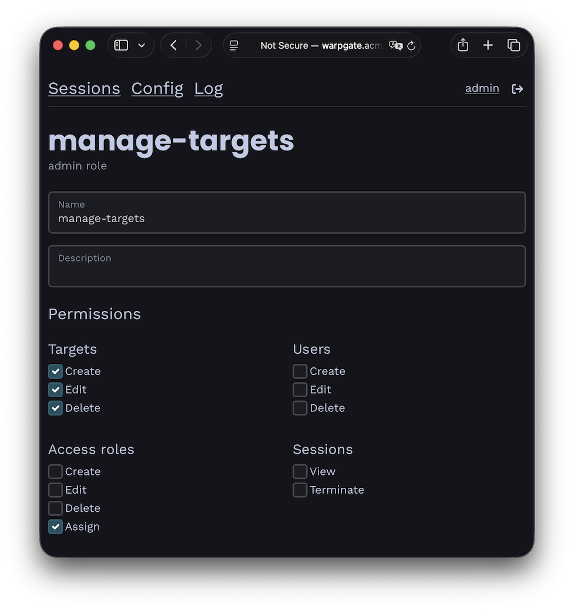

User roles§
Warpgate comes with two kinds of roles:
- Access roles are used to assign users to targets. A user that has a matching access role will be able to see and connect to the target.
- Admin roles grant partial or full access to the Warpgate admin UI. You can use admin roles to, for example, allow a user to manage targets but not users.
Access roles§
You can use access roles to grant a new user access to multiple targets at once (or assign multiple users to a target).
- Create and remove roles under
Config>Access roles. - Assign roles to users and targets on their respective configuration pages.
Admin roles§
v0.23+
Admin roles grant granular permissions to the admin UI. Having any single admin role assigned will allow a user to access the admin UI at /@warpgate/admin, and access to individual areas is controlled by the role's permissions.
- Create and remove roles under
Config>Admin roles. - Assign roles to users on their configuration page.

Example admin role permisisons
Note: before v0.23, admin access used to be granted via the warpgate:admin access role.